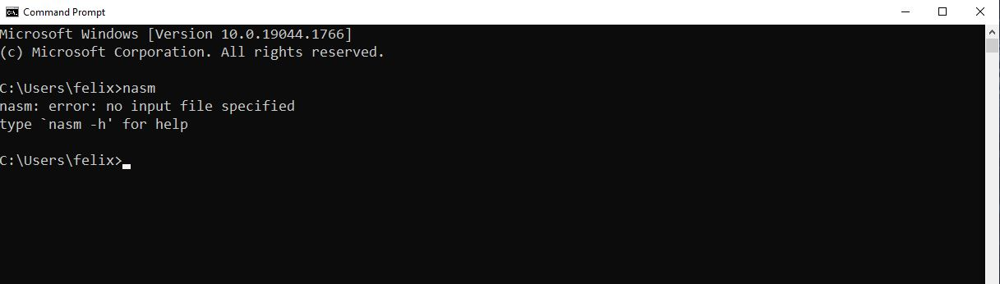
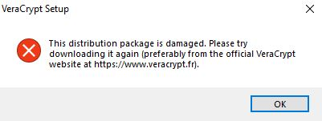
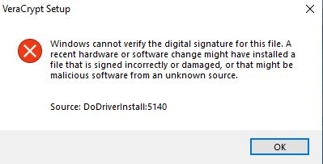

Документация
 Технические подробности
Технические подробности
 Сборка VeraCrypt из исходного кода
Сборка VeraCrypt из исходного кода
 Руководство по сборке в Windows
Руководство по сборке в Windows


C:\Program Files (x86)\nasm
nasm

C:\Program Files\YASM

Имя переменной: YASMPATH
Значение переменной: C:\Program Files\YASM
yasm
vsyasm

Эти инструменты не требуются для компиляции стандартных двоичных файлов приложения VeraCrypt или драйвера Windows с помощью Visual Studio 2022 и текущего WDK. Устанавливайте их только если нужно пересобрать устаревший загрузчик BIOS в "src\Boot\Windows" или собрать конфигурации решения, включающие проект Boot, например "ReleaseCustomEFI".
nasm
gzip
upx
dd --help
Если вы установили Visual Studio 2022 с перечисленными выше компонентами, этот шаг можно пропустить. Устанавливайте Build Tools только если нужна среда сборки из командной строки без полного IDE Visual Studio.
msbuild src\VeraCrypt.sln /m /p:Configuration=Release /p:Platform=x64
msbuild src\VeraCrypt.sln /m /p:Configuration=Release /p:Platform=ARM64
msbuild src\VeraCrypt.sln /m /p:Configuration=Release /p:Platform=Win32
msbuild src\Driver\Driver.vcxproj /m /p:Configuration=Release /p:Platform=x64
msbuild src\Driver\Driver.vcxproj /m /p:Configuration=Release /p:Platform=ARM64
msbuild src\VeraCrypt.sln /m /p:Configuration=ReleaseCustomEFI /p:Platform=x64
msbuild src\VeraCrypt.sln /m /p:Configuration=ReleaseCustomEFI /p:Platform=ARM64
С помощью скрипта sign_test.bat вы только что подписали исполняемые файлы VeraCrypt. Это необходимо, поскольку Windows принимает только те драйверы, которым доверяет подписанный центр сертификации.
Поскольку вы использовали не официальный сертификат подписи VeraCrypt для подписи своего кода, а общедоступную версию для разработки, вы должны импортировать и, следовательно, доверять используемым сертификатам.

if (!IsOSAtLeast (WIN_10))
return TRUE;
return TRUE;
